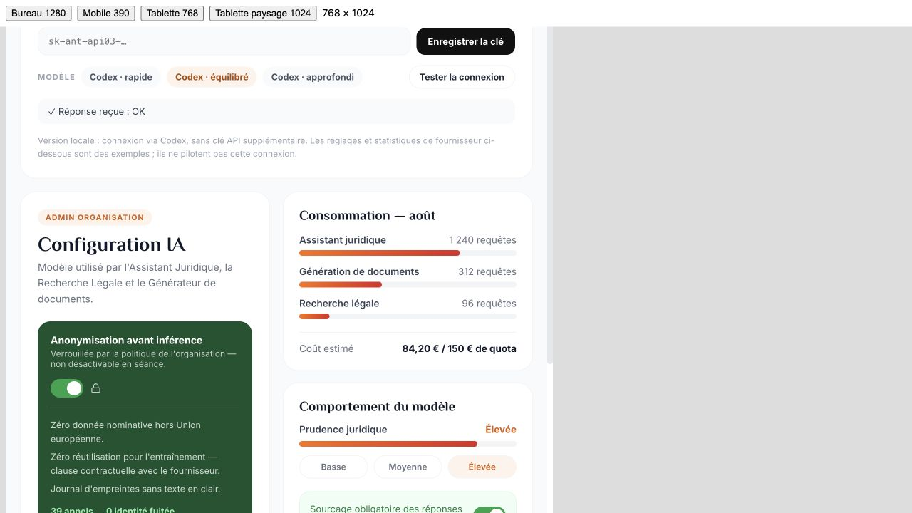

Étape 1 — bilan de recette complémentaire du 23 octobre 2026 36 captures supplémentaires, 15 cas documentés. Tests sur la référence gelée servie au port 5054, données de démonstration uniquement. Aucun fichier applicatif modifié. Dimensions simulées 390 × 844 et 768 × 1024 : pas une certification sur appareils physiques. 20 tests de non-régression JavaScript réussis. 4 tests de fichiers exportés réussis avec le Python du runtime fourni ; le premier lancement avec Python système échouait faute d’openpyxl, avant tout test. Référence : 324 fichiers conformes au manifeste. Deux appels IA réels aboutis : génération du PV depuis les marqueurs et test de connexion OK. L’exactitude juridique ne fait pas partie de cette validation fonctionnelle. Le PV généré dépasse une page ; le prototype affiche l’avertissement prévu. Son impression complète n’a pas été validée dans cette passe. Cinq nouveaux constats F26–F30, en complément de F18–F25. Les captures 013/014 montrent l’attente, pas un PV terminé. La capture 016 correspond à l’interruption du catalogue par le résultat IA ; l’état vide du catalogue est prouvé par 018. Aucun envoi réel de message ou d’invitation effectué. La demande de formation n’a qu’un effet local, confirmé par le code, puis a été retirée. L’emploi de la fiche adhérent a été restauré. Le PV de test reste en brouillon dans le navigateur de recette. Clôture de l’étape : NON PRONONCÉE. Les simulations ne peuvent pas être validées comme services réels. Les parcours de micro réel, import de vrais fichiers, signature avec valeur juridique, invitations reçues, diffusion reçue, facturation, permissions multi-utilisateurs et mode hors ligne réel restent non validés. Les formulaires et variantes non exercés dans les preuves restent à couvrir ; la matrice conserve explicitement cette limite au lieu de convertir une inspection en succès. Pour finir la recette : couvrir les variantes restantes des formulaires métier (incluant annulation/rechargement), vérifier le PV généré à l’impression, exécuter les parcours sur appareils physiques avec microphone et fichiers de test. Pour les services simulés, décider à l’étape 2 du comportement cible, puis les retester lorsqu’ils existent. Ne pas engager de correction de design à partir de ce rapport sans arbitrage préalable.
| section | parcours | attendu | observe | statut | Preuve |
|---|---|---|---|---|---|
| ADH-MSG | Message vide | Objet et texte obligatoires | Refus explicite obtenu ; aucun envoi | Validé sur ce cas | État · Capture |
| ADH-FIC | Annulation de fiche | Abandonner la valeur temporaire | Valeur initiale maintenue | Validé sur ce cas | État · Capture |
| ADH-FIC | Sauvegarde et rechargement | Conserver la modification | Valeur RECETTE PERSISTANCE retrouvée après reconnexion ; valeur initiale restaurée ensuite | Validé sur ce cas | État · Capture |
| ADH | Pagination | Passer de 1–5 à 6–10 puis 11–12 | Dernière page atteinte et bouton suivant désactivé | Validé sur ce cas | État · Capture |
| REU-DET | Écouter | Ouvrir une lecture audio et journaliser | Simple message de succès | Simulation F26 | État · Capture |
| REU-DET | PV depuis marqueurs | Générer un brouillon lié à la réunion | 14 blocs créés ; quatre marqueurs repris ; avertissement de dépassement de page affiché ; contenu à relire | Génération réelle ; anomalie de navigation F27 | État · Capture |
| FOR-IA | Recherche absente | État vide compréhensible | Aucune formation ne correspond à ces critères | Validé sur ce cas | État · Capture |
| FOR-GEN | Catalogue et demande/retrait | Demande au bureau et retrait | Changement local uniquement, aucun service d’envoi dans fmRequest | Simulation F28 | État · Capture |
| PAR-MBR | Invitation vide et annulation | Refuser une adresse vide puis fermer | Message de validation puis retour à cinq membres | Validé sur ce cas ; invitation réelle non testée | État · Capture |
| AGE | Événement vide | Refuser un intitulé vide | Donnez un intitulé à l’événement | Validé sur ce cas | État · Capture |
| AGE | Fin avant début | Refuser 08:00 après début 09:00 | L’heure de fin doit suivre l’heure de début ; annulation sans création | Validé sur ce cas | État · Capture |
| ONB | Importer CSV élus | Ouvrir le parcours d’import | Ouvre seulement la liste des membres | Anomalie F29 | État · Capture |
| PAR-PRO | Modifier signature | Ouvrir les champs à modifier | Succès immédiat sans édition | Simulation F30 | État · Capture |
| PAR-IA | Tester connexion | Réponse du service IA | Réponse reçue : OK | Validé sur ce cas | État · Capture |
Le bouton affiche une écoute inscrite au journal, sans lecteur ni nouvelle entrée. Le gestionnaire listen ne fait que flash(), ligne 12756.
Après lancement du PV, navigation vers Formations et recherche. La réponse ouvre automatiquement docedit et interrompt le parcours courant. pvFromReunion appelle go sans vérifier la route, ligne 11264. Le PV lui-même a bien été généré.
Le bouton devient Session demandée et affiche une transmission au bureau. fmRequest ne modifie que fmReq et affiche un toast, lignes 14313–14316. Retrait local exécuté ensuite.
Prise en main → Importer un CSV ouvre la liste Organisation & membres. Aucun sélecteur ni étape d’import. Destination confirmée par le gestionnaire ligne 13197.
Aucun formulaire : le bouton affiche Signature enregistrée. toast_saved est un simple flash, ligne 13955.
Matrice des 87 sections · Anomalies F18–F30

Contrôle supplémentaire réussi : le PV et son lien depuis la réunion persistent après rechargement et reconnexion. Capture 036.